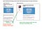

Medium Version and Author info


I took Seth Godin which is a very prolific and great book author to highlight the fact that author information should be always presented to readers whatever the device is more if it comes from a great author like Seth Godin.
Just to say that I acknowledge this issue and I will take care of this for all authors I will have the chance to publish their books.